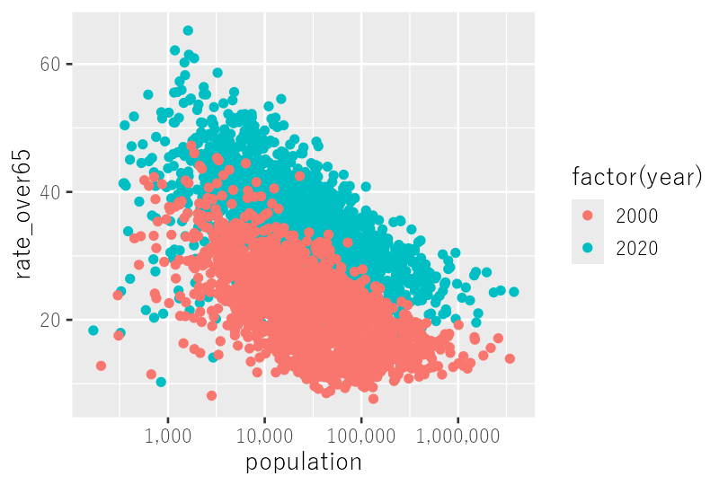

記者のためのR講座
デジタル化が進み、さまざまなデータが公開されるようになってきました。政府による各種の統計も、アクセスへの敷居が少しずつ下がってきています。
ただ、データが何百行もあったり、シートが何十個にも分かれていたりするファイルには、技術がなければ容易に手出しができません。分析したらおもしろいことがわかりそうなのに、手作業ではとても無理！ そうやってあきらめたことがある人は、少なくないのではないでしょうか。
「R（アール）」というプログラミング言語を覚えると、そのハードルを越えられます。データが何百行どころか何百万行あっても平気です。しかも無料で使えます。

記者自身が自らデータをいじくり回し、分析し、発見したことを記事にして伝える。私は朝日新聞でそうした仕事をしています。「データ報道」「データジャーナリズム」などと呼ばれるものです。Rはその大きな武器です。
この講座は、Rをまったく触ったことのない記者を想定して書いています。統計の知識も、プログラミングの経験もいりません。使うのはいわゆるオープンデータ。国勢調査や選挙の得票といった、記者にとってはなじみのあるものばかりです。
どこから読むか
- はじめて触る人
まずは「はじめに」から順番に。第1部の最後まで来れば、たいていのデータは加工できるようになります。 - グラフを描きたい人
第2部から。折れ線・棒・散布図の3種類だけで、記者の仕事はほぼ足ります。 - データを集めたい人
第3部から。ウェブのページに貼られた表を取るところから始めて、70ページ近くのページを一気に集め、47都道府県分のファイルをまとめて落とし、扱いにくいExcelを分析しやすい形に組み替えるところまで。 - 関数の名前を思い出したい人
付録の早見表へ。「あれ、何だっけ」の8割はここで済みます。
この講座で使うもの
- RとRStudio（どちらも無料）。入れ方はRとRStudioを入れるで説明します。
- tidyverseというパッケージ。データ加工とグラフはほぼこれで済みます。
- データは主に国勢調査（政府統計の総合窓口 e-Stat）から取ってきたものを使います。この講座で使うファイルは全部ダウンロードできますので、手元にデータがなくても始められます。
一つずつ落としたい人、もとの入手先を知りたい人は付録Dへ。各章にも、その章で使うファイルへのリンクを置いてあります。
書いた人から
私自身、40歳を過ぎてRを使いはじめたときは、何がなんだかわかりませんでした。プログラミングというものの具体的な接点は、大学生のときの教養課程でCを教わって「Hello World」と出力した記憶がかすかにあるのみ、といった状態でした。
やりたいことをプログラミング言語として表現するという作業は、なじみのない人にはとっつきにくいものです。だからこの講座では、「なぜそう書くのか」と「どこでつまずくのか」をできるだけ書き残すようにしました。
この講座のもとにしたのは2年前、データ報道を急に担当することになった記者のために開いた勉強会です。週に1度、2時間の勉強会。しょっちゅうつまずきながら、それでも自分で考えて、とにかくプログラムを書く。まったく未経験だった同僚たちにこれを続けてもらったら、2カ月後には基本が身についていました。
わからないところは、飛ばして先に進んでかまいません。ただ、読んだだけで分かった気にはならないでください。何より大切なのは手を動かすこと。まずは書く。何をやっているのかは、やりながら腑に落ちていきます。